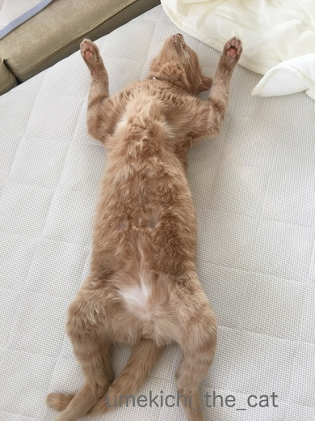
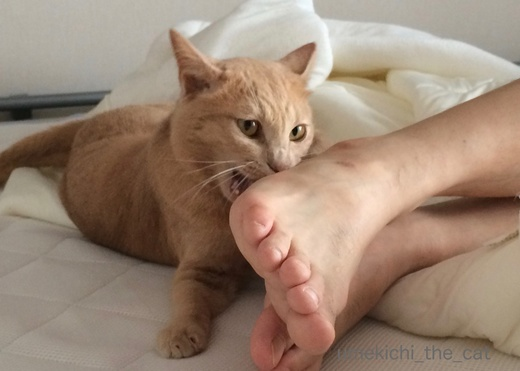
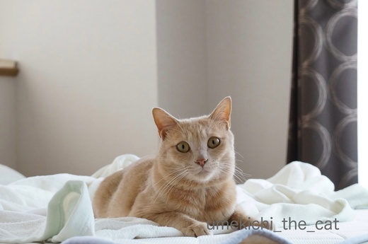
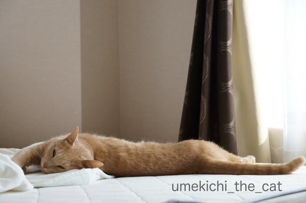
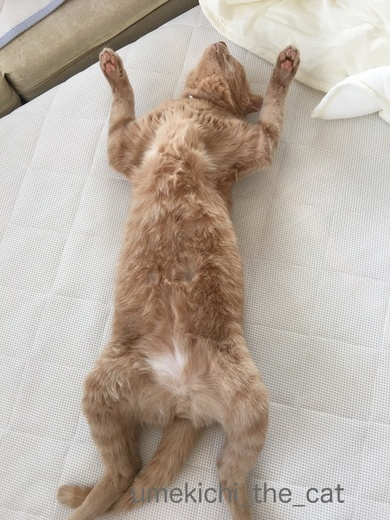
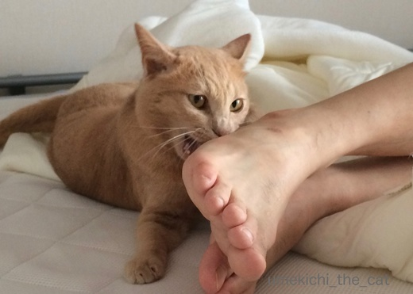
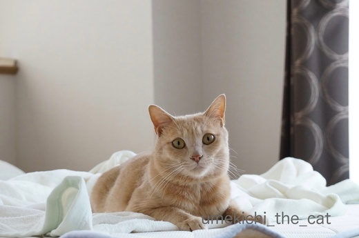
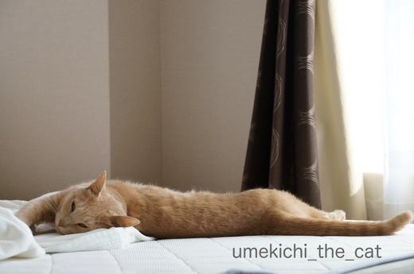

マイルドな気分で朝を過ごす梅吉 [梅吉]
朝、おとーさんを起こしに寝室に行った梅吉さん。
なかなか戻ってこないので（おっとも起きてこない）見に行くと

ちょっとー、何やってるんですかー。
なでなでに懐柔されてこんな姿に。
最近の梅吉さんはマイルドな朝時間を過ごしています。
ちょっと前までは朝から大運動会だったり、おとーさんを起こすには

ある時は寝込みの足をがぶがぶ。
（足が大写しでスミマセン・・・）

そしてまたある時は頭や喉元など首から上をねらってがぶがぶ。
その容赦ない攻撃は“我が家の刺客”と呼ばれていたのに・・・
で、現在のマイルド梅吉さん。
この後おとーさんが起きて来てもリビングに姿が見えません。
さては・・・

![[猫]](https://blog.ss-blog.jp/_images_e/101.gif) わし、いまりびんぐにいこう、おもってたんやっ
わし、いまりびんぐにいこう、おもってたんやっ![[あせあせ（飛び散る汗）]](https://blog.ss-blog.jp/_images_e/162.gif)
そうですか〜？その「きりりっ」は取って付けたみたいじゃない？？
お母さんこっそりのぞいたらこんな梅吉さんが見えましたよ![[ダッシュ（走り出すさま）]](https://blog.ss-blog.jp/_images_e/164.gif)

ごはんがもらえる気配を少しでも感じるとダッシュでやってくるので
夏バテとかではない様です。
よく寝てよく食べるそして心はマイルドに・・・と
健康雑誌のキャッチコピーみたいな事を実践している模様ww
 ↑ガブッと一押し↑
↑ガブッと一押し↑
2年前、2015年9月の写真。
今より肉球がつやピカです。むふ〜〜〜〜〜〜〜っ(≧▽≦)
も一つおまけ
実家が夕張メロン送ってくれたーーーＯ(≧▽≦)Ｏ
これみよがしにシールまで貼ってみましたww
果肉が皮のキワまで柔らかくてサイコー！！喉がイガイガするくらい甘〜い！！
でもここだけの話、夕張近郊にある鵡川のほべつメロン、由仁あたりで採れるメロンも
「夕張メロン」を名乗れないだけで負けないくらい美味しいんです。
しかもお安い＾＾
夕張メロン以外は道外に出荷されると「北海道メロン」と一括りにされちゃう様なので
スーパーなどで見かけても区別できないのが残念です。
なかなか戻ってこないので（おっとも起きてこない）見に行くと

ちょっとー、何やってるんですかー。
なでなでに懐柔されてこんな姿に。
最近の梅吉さんはマイルドな朝時間を過ごしています。
ちょっと前までは朝から大運動会だったり、おとーさんを起こすには

ある時は寝込みの足をがぶがぶ。
（足が大写しでスミマセン・・・）

そしてまたある時は頭や喉元など首から上をねらってがぶがぶ。
その容赦ない攻撃は“我が家の刺客”と呼ばれていたのに・・・
で、現在のマイルド梅吉さん。
この後おとーさんが起きて来てもリビングに姿が見えません。
さては・・・

そうですか〜？その「きりりっ」は取って付けたみたいじゃない？？
お母さんこっそりのぞいたらこんな梅吉さんが見えましたよ

ごはんがもらえる気配を少しでも感じるとダッシュでやってくるので
夏バテとかではない様です。
よく寝てよく食べるそして心はマイルドに・・・と
健康雑誌のキャッチコピーみたいな事を実践している模様ww
2年前、2015年9月の写真。
今より肉球がつやピカです。むふ〜〜〜〜〜〜〜っ(≧▽≦)
も一つおまけ
実家が夕張メロン送ってくれたーーーＯ(≧▽≦)Ｏ
これみよがしにシールまで貼ってみましたww
果肉が皮のキワまで柔らかくてサイコー！！喉がイガイガするくらい甘〜い！！
でもここだけの話、夕張近郊にある鵡川のほべつメロン、由仁あたりで採れるメロンも
「夕張メロン」を名乗れないだけで負けないくらい美味しいんです。
しかもお安い＾＾
夕張メロン以外は道外に出荷されると「北海道メロン」と一括りにされちゃう様なので
スーパーなどで見かけても区別できないのが残念です。

カフェオレ色の梅吉

梅吉 2023年8月10日 永眠


梅吉と出会った譲渡会

犬猫の理由なき殺処分ゼロ
妄想広告
UMEKICHI 光

爆発的に早い！
時々攻撃的！
Thanks to Mr.Boss365
爆発的に早い！
時々攻撃的！
Thanks to Mr.Boss365

いきなりの梅吉くんの見事なヘソ天姿(*´▽｀*)～～
こんなポーズされたらそのお腹に顔をうずめてグリグリしてやるっ！！(*^^*)
by palpal (2017-06-30 16:00)
梅吉さん♪見事なへそ天(#^.^#)
おとーさんはマイルドな梅吉さんが
ウェルカムですね♪
by きぃ (2017-06-30 16:30)
梅吉さん、おとーさんに骨抜きにされすぎです(^-^;
なんだか二人で朝からイチャイチャしてるの、ちょっと妬けちゃいませんか？！
お～のどがイガイガするほど美味しいメロン♪
ホント北海道は美味しくないものを探すほうが難しいですね！
by ゆきち (2017-06-30 18:32)
朝のこんなまったりタイム起きたくないですよね～こんなヘソ天していたら早く起きろと言えないですね～
by みぃにゃん (2017-06-30 18:43)
見事に開いてますねー。スンバラシイですっ!
北海道の地元の人しか知らない美味しいものって、いっぱいありそうですね。夫が来週札幌出張だから、何か買って来てもらおうかしら。
by zombiekong (2017-06-30 18:50)
見事なヘソ天！！
でも梅吉さん、スリムになりましたね。^^)
by yes_hama (2017-06-30 21:31)
梅吉さんのへそ天、幸せな証拠ですね。
気ぜわしい朝にユックリな空気が見えます。
ご主人様、梅吉さんと間違えそうなほど、よく似ていますね（笑）
by kiki (2017-06-30 22:04)
な、な～んと美味しそうな夕張メロン！
目の前に提供されたら、梅吉さんと一緒に
へそ天して懐柔されちゃいそうです。。
by うっかりくま (2017-06-30 23:28)
ひゃはは(^m^) それって、ミイラ取りがミイラになる、ってヤツ?!
刺客も、やがて、ココロがまあるくなるのにゃ〜♡
by のらん (2017-07-01 07:28)
思いっきり「開き」になってますねぇ＾＾
by ぽちの輔 (2017-07-01 07:55)
ガブガブも可愛い～！けど、いっぱいいっぱい甘やかしてもらって、マイルドライフを満喫してほしいな♪
by Ginger (2017-07-01 15:34)
マイルドで・・・幸せな時間。
梅吉くんも幸せいっぱいの開きｗ
子猫も成猫も老猫も！それぞれの良さがあります。
梅吉くん、きっとまだまだ甘えん坊さんになるよ～(^-^)
これ見よがしな夕張メロン！！
じゅるる・・・ｗ
by emi (2017-07-01 19:11)
梅吉さん、なんて無防備なへそ天姿♪( ´▽｀)
これはきっとお腹に顔を埋めてもふもふして欲しいと誘ってるんですねぇ（≧∇≦）
夕張メロン、赤い果肉が瑞々しくて美味しそう( ^ω^ )
半分にcutしてスプーンでいただくのがうちのかみさんのお気に入りの食べ方ですw
by ニッキー (2017-07-01 23:12)
梅吉さん、みごとな開きっぷり！
サイコーです♪
夕張メロン、美味しそう‥
北海道メロン、美味しいんですね＾＾
by sana (2017-07-02 14:45)
ちょっと！梅吉さん！
そのあられもない姿は可愛すぎるよぉー
お腹めがけてダイブ！！！
きりりとした顔みせても、その前の様子をばっちり
おかーさんに見られていたのね^m^
あああ、夕張メロン・・・
久しく食べてないよぉぉぉぉ じゅるるる
by リュカ (2017-07-03 10:07)
梅吉さん。なんて素晴らしい、ひ・ら・き、なんでしょっ！！
全くブレのない、安定形状！！
ここまでトロトロにしちゃう、おっとさんも、スゴイとみた(^^♪
ガブガブしちゃうくらい、ＬＯＶＥなのね♪
夕張メロンの、みずみずしいオレンジが、ま、眩しいっ～。
by morichan (2017-07-03 10:50)
palpalさん＞い、生きてる！？と思うくらいに脱力感たっぷりのヘソ天でしたよ＾＾
お腹に顔・・・意外でしょうが割と怒りません。
チャレンジしてみますか？「割と」の箇所、思案のしどころ〜(^_－)☆
きぃさん＞おとーさん的にはマイルド梅吉が◎なんですが
私には物足りない・・・・
朝「いたたたたたたたーーーー、梅吉やめろー！！」
と聞こえてくるのが我が家の元気な朝の始まりですから(≧艸≦)
ゆきちさん＞「オラオラいつまでイチャイチャしてるんだおー」と
おかーさんやさぐれちゃいました(^▽^;)
なので、梅吉に強烈な鼻チューをお見舞い＾＾
飛び起きてお口の周りを舐めてましたわww
赤肉メロンが最盛期には500円くらいで手に入ります。
ブランドメロンじゃなくても十分旨し！です。
みぃにゃんさん＞へそ天してまったりしていたら・・・・
「人を4:30にわーわーわーわー起こしておいて何寝てるんだよー」と
愛を込めて鼻チューで起こしてあげます(^_－)☆
飛び起きますよ・・・
zombiekongさん＞完全に野生を失ったへそ天でしたー。
ご主人札幌へ？まだアスパラがいけるかな。
地物のとうきびがそろそろ出始めているかな？
ホッケの開きもいいですよー＾＾
yes_hamaさん＞仰向けになってもなお、ぼよよんとしないお腹・・・
毛の下では腹筋が割れているかもしれませんよー。
お見せできなくて残念ですww
kikiさん＞梅吉は大変しあわそうなんですが
4:30に起こされたおかーさんは若干複雑でしたよww
梅吉とおっとだんだん似て来た様です。
ほら、飼い主に（が？）似てくるって言うから！(≧▽≦)
うっかりくまさん＞あら、夕張メロンで懐柔されちゃいますかー＾＾
でもこれはほんと私もへそ天するほど美味しかったで〜すww
by ちぃ (2017-07-03 14:23)
のらんさん＞まさに、その言葉以外になんと言いましょうか！
梅吉、まだ若いのにすっかり丸くなって好々爺状態です (^▽^;)
ぽちの輔さん＞久々の見事な開きでございました＾＾
Gingerさん＞甘やかすことならおまかせくださいませ(^_－)☆
なんたって我が家のヒエラルキーの頂点のお方ですから・・・
emiさん＞子猫時代は只々愛らしい可愛らしいだったのですが
大人になってくるとにゃんこなりに色々なことを理解している様で
そこがまた味わい深く可愛らしい・・・
おじいちゃんになってもますます可愛いのでしょうね＾＾
甘えん坊は・・・日に日に強くなるばかり〜。
甘えポイントを確実に把握しつつあるのがまた◎
メロンいいでしょーＯ(≧▽≦)Ｏ自慢したかったのww
ニッキーさん＞意外でしょうがもふもふも顔＆埋めも割といけますよー( ´▽｀)
ただ、気に入らない一線を越えるとがぶがぶけりけり。
その一線の場所が毎日違うので見極めるのが大変な下僕です(⌒_⌒;
ゴッドマザー様の食べ方正解！！夕張メロンはスプーンですくって食べましょう！！
sanaさん＞暑さもあるのでしょうか、豪快に開いていました〜 (^▽^;)
北海道メロン、スーパーで見かけたら是非ぜひ＾＾
リュカさん＞やっぱりこんなお腹見せられたらダイブしたくなるよねー＾＾
割と怒らないんですよ、これが。挑戦してみる？
「割と」に注意なんですけどねーww頭にひとガブで逃げたら平気よ！！
道外に出て思いました。夕張メロン最高ーーー(≧▽≦)
morichanさん＞ふふふ・・・開きのお手本の様でしょう？
チャックの在りかも隠さずに露出してみましたww
あ！？どうしてわかりましたか！！梅吉のがぶがぶは愛情表現。
ラブガブって言われてますからーＯ(≧▽≦)Ｏ
夕張メロン本当にみずみずしくて美味しかったです＾＾
by ちぃ (2017-07-03 15:48)